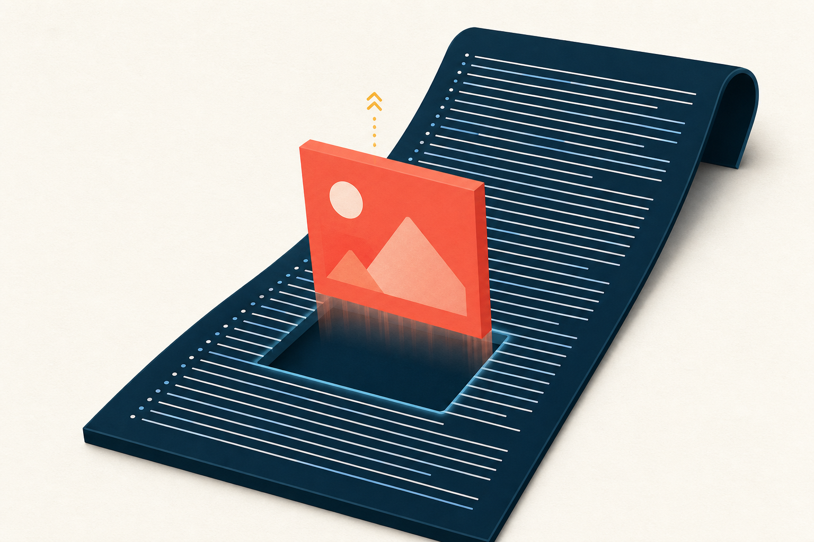
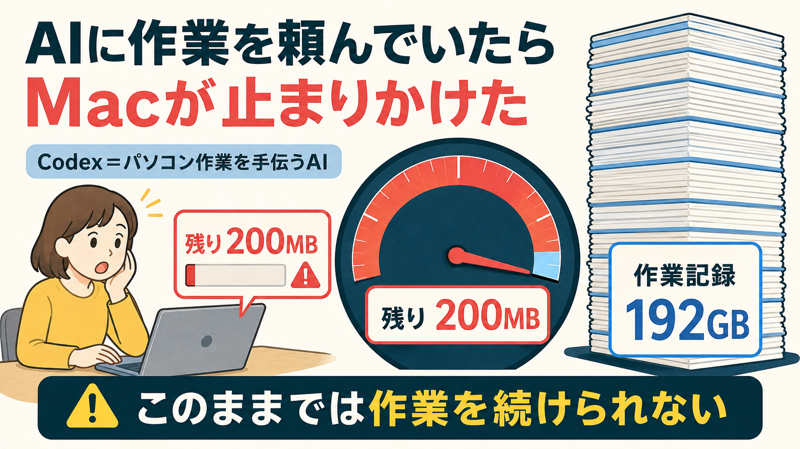
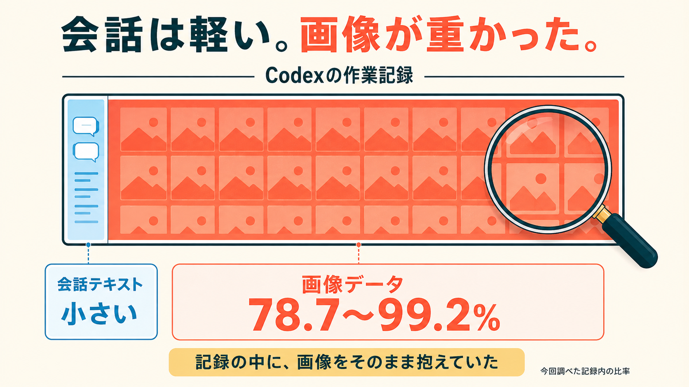
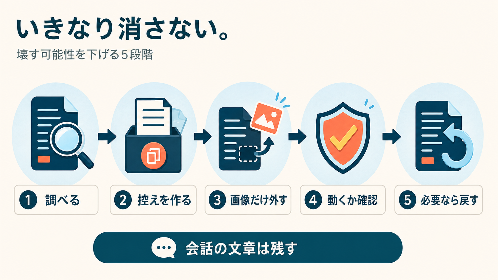

Codex × macOS × 手動実行
会話を消さずに、
作業できる空きを取り戻す。
Codexの会話テキストを残し、ログ内の埋め込み画像データを取り除くための、診断・バックアップ・検証・復元をまとめたmacOS用スキルです。
500円150部まで
151部目から980円
8月12日（水）Brainで発売
※回収量は環境によって異なります。

実測事故から生まれた
空き200MBで、作業が止まった日。

実際のMacで、Codexのログが192GBまで膨らみ、空き容量は200MBまで減りました。
原因をたどると、会話の文字だけでなく、ログ内に大きな埋め込み画像データが含まれていました。
消す対象を言い換える
「スクショだけ」ではなく、
埋め込み画像データ。
画像入力やブラウザ操作を多用する一部環境で、ログが大きくなることがあります。対象を曖昧にせず、診断結果を見てから手動で進めます。

初期動作は読み取り専用
いきなり書き換えない。
戻せる順番で進める。

- 01診断読み取り専用で対象と見込み量を確認
- 02バックアップ外部／別ボリュームへ保存。難しい場合は一時バックアップを明示了承
- 03実行利用者が手動で書き換えを開始
- 04検証処理結果と会話の再表示を確認
- 05復元問題があればバックアップから戻す
行数617 → 617
JSON617 / 617
画像以外SHA-256一致
!
先に伝える大事な条件
同じディスクにバックアップを残すだけでは、空きは増えません。
復元できる状態のまま空きを増やすには、外付け／別ボリュームへの退避が必要です。同じ内蔵ディスクしか使えない場合は、検証後に本人が明示した時だけバックアップを削除します。その後、取り除いた画像データは復元できません。
初版の対象
この条件に絞ります。
- CodexをmacOSで使っている
- 画像入力やブラウザ操作を多用している
- ログ容量を確認してから手動で整理したい
- バックアップと復元手順を先に持ちたい
初版の対象外
未検証のものは、入れません。
- Windows
- Claude Code
- Antigravity
- 自動実行
対応範囲を広げる前に、実測と復元確認を優先します。
販売よりデータを守る
8月10日に、安全性のGO判定。
P0またはP1の問題が1件でも残る場合、発売を延期します。公開制作は続けても、未合格の状態では販売しません。
初版
消さずに空ける
Codexの会話テキストを残し、ログ内の埋め込み画像データを取り除くmacOS用スキル。
150部まで
500円
151部目から980円
Brain販売ページへのCTAは、公開前に接続します。
購入前にご確認ください
- 本商品はOpenAIの公式商品ではありません。
- 空き容量の回収量は、利用状況・ログ内容・端末環境によって異なります。
- すべての環境での無損失や動作を保証するものではありません。
- 初版はCodex × macOS × 手動実行のみを対象とします。
- 同一ディスクのバックアップは、削除するまで実質的な空き回収になりません。